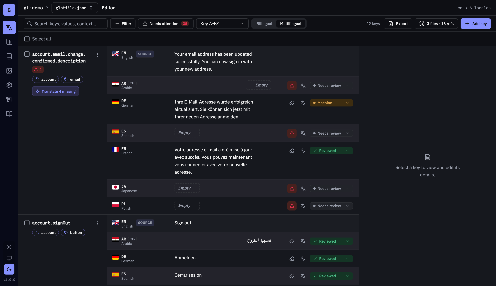
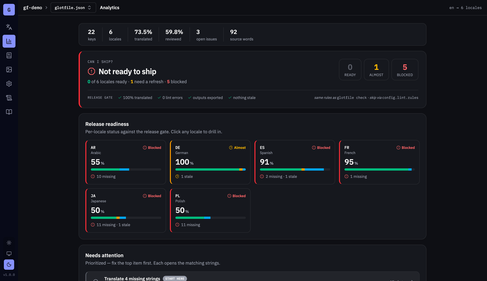
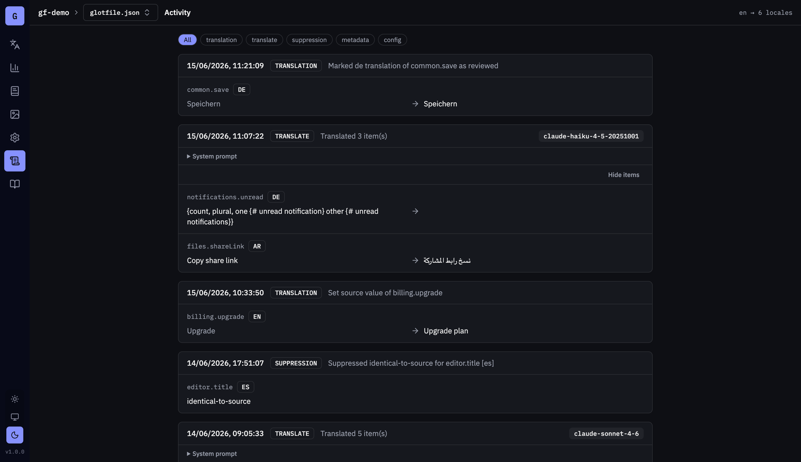

STATUS QUO №1
Hand-editing locale files
Eleven JSON files that drift apart quietly. A Polish fix pasted in from an email. Nobody knows why de.json has three keys the others don't.
local-first · git-native · MIT
Glotfile is a translation manager that lives in one JSON file, committed next to your code. Edit in a local web UI, translate with your own AI key, export to your framework's locale format. No platform, no account — nothing leaves your machine except the AI calls you choose to make.
npx glotfile
Node 20+ · runs on 127.0.0.1 · delete glotfile.json and it's like it never happened
STATUS QUO №1
Eleven JSON files that drift apart quietly. A Polish fix pasted in from an email. Nobody knows why de.json has three keys the others don't.
STATUS QUO №2
Your strings live in someone else's database and come back as bot PRs. You pay per seat, per word, per month — for access to your own copy.
Glotfile's take: translations are code. Put them in the repo, review them in PRs, and both problems stop existing.
01
Run it in your project. Glotfile finds your existing ARB, PHP, JSON or .po files, imports every key, and writes one deterministic glotfile.json. No config, no account.

02
One command starts a web UI on 127.0.0.1 — search, plurals, RTL, review states. Fill missing locales with the AI provider you already pay for. Context comes from how the string is used in your code, not a guess.
03
Write your platform's native locale files and commit everything. Output is deterministic — stable key order, fixed indent — so a translation change is a small reviewable diff, and an unchanged export is a zero-line one. Safe to run in CI.
One npx glotfile opens this on 127.0.0.1: dark mode, right-to-left, plurals, a “can I ship?” release gate, and an audit log of every AI call — all reading and writing the one JSON file in your repo.


No server, no sync, no account. One npx command and you're editing. Nothing to host, nothing to cancel.
One deterministic state file, committed with your code. Review translations the way you review everything else: in the PR.
Anthropic, OpenAI, Bedrock, OpenRouter, Claude Code — or Ollama, fully offline. Your key, your model, your bill.
First-class export to Flutter ARB, Laravel PHP, i18next and vue-i18n JSON, gettext .po, and Apple .stringsdict.
Placeholder and spelling lints, unused-key scanning against your codebase, and a CI check that fails when locales drift.
Stable key order, fixed indent, one trailing newline. Re-export with no changes and git sees nothing at all.
EXPORTS TO
TRANSLATES WITH
The server binds to 127.0.0.1 and nowhere else. Your strings travel exactly two places: your git remote, and the AI provider you configure — point it at Ollama and it's just git.
No telemetry, no account, no copy of your strings on anyone else's disk. Your git history is the audit log.